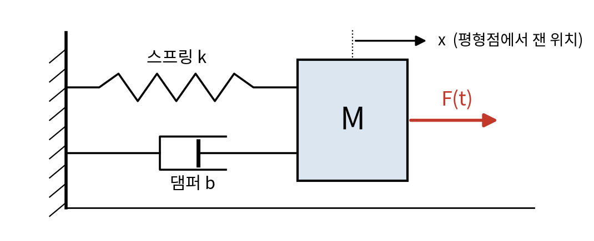
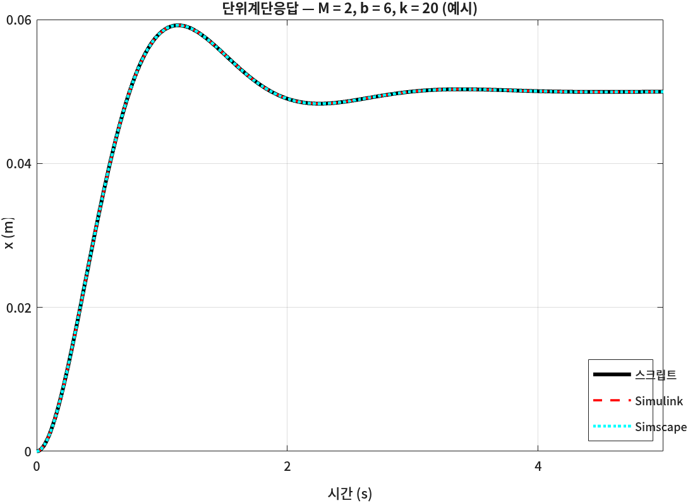

Simulink와 Simscape로 질량-스프링-댐퍼 모델링
📅 제출 마감 — 2026년 12월 2일 (수) 23:59 · e-class 게시판
- 같은 질량-스프링-댐퍼를 세 가지 방법 — 전달함수, 블록 선도, 부품 조립 — 으로 만들면 같은 응답이 나올까요?
- 전달함수를 쓰지 않고 운동방정식만으로 Simulink 모델을 만들 수 있을까요?
- 부족제동(진동하며 가라앉는 응답)이 되려면 질량 \(M\), 댐핑 \(b\), 스프링 \(k\)를 어떻게 골라야 할까요?
- 세 결과가 소수점 아래에서 조금씩 다르다면, 그 차이는 어디서 오는 것일까요?
1. 숙제는 다섯 문제입니다
10회에서 질량-스프링-댐퍼를 전달함수로 한 번, Simscape 부품으로 한 번 만들어 두 응답을 겹쳐 보았습니다. 이번 숙제는 여기에 Simulink 블록 선도를 하나 더 얹습니다. 세 모델은 여러분이 정한 같은 \(M, b, k\)를 쓰고, 마지막 문제에서 세 결과를 한자리에 놓고 비교합니다.
운동방정식 M x'' + b x' + k x = F(t)
│
├─ 라플라스 변환 → 전달함수 1/(Ms² + bs + k) ──▶ 문제 2 MATLAB 스크립트
├─ 적분기 두 개로 푼다 ──▶ 문제 3 Simulink 블록 선도
└─ 부품을 그대로 잇는다 ──▶ 문제 4 Simscape
│
문제 5 정상상태 값 · overshoot(%) · 0 ~ 5 s 단위계단응답 비교 ◀─┘
| 문제 | 하는 일 | 배점 |
|---|---|---|
| 1 | 계수 \(M, b, k\)를 정하고 고유진동수 · 감쇠비 · overshoot · 정상상태 값을 손으로 구하기 | 8 |
| 2 | MATLAB 스크립트(전달함수)로 단위계단응답 · overshoot · 정상상태 값 구하기 | 7 |
| 3 | 운동방정식을 Simulink 블록 선도(Integrator 두 개)로 만들고 같은 값 구하기 | 8 |
| 4 | Simscape 부품으로 같은 시스템을 만들고 같은 값 구하기 | 8 |
| 5 | 세 결과를 표와 그래프 하나로 비교하고 차이를 해석하기 | 9 |
다섯 문제가 40점이고, 보고서를 제출하면 기본 점수 10점을 받습니다. 합쳐서 총점 50점입니다.
2. 이 숙제에서 특히 신경 쓸 세 가지
(1) 계수는 스스로 정합니다
\(M, b, k\)는 각자 고릅니다. 고르는 규칙은 문제 1에 있습니다. 다른 학생과 겹치지 않도록 셋 중 하나 이상은 소수점 한 자리 수(1.5, 6.4 같은 수)로 정합니다. 채점할 때 전원의 계수를 표로 모아서 봅니다. 서로 상의하면서 방법을 배우는 것은 얼마든지 괜찮습니다. 숫자는 각자 자기 것을 넣으면 됩니다.
(2) 세 모델은 같은 변수 M, b, k를 씁니다
스크립트 맨 위에서 M = …; b = …; k = …;로 값을 정하고, Simulink · Simscape 블록의 설정 칸에는
숫자 대신 변수 이름 M, b, k를 적습니다(10회 ⑤에서 한 방법).
이렇게 해 두면 숫자를 한 곳에서만 바꿔도 세 결과가 같이 바뀌어서, 세 모델이 정말 같은 시스템인지 믿을 수 있습니다.
(3) 모르는 건 찾아보세요. AI도 써도 됩니다
모르는 함수나 블록이 나오면 구글에 matlab 이름으로 검색하면 공식 문서에 사용법과 예제가 나옵니다.
AI(ChatGPT, Claude 등)에게 물어보는 것도 괜찮습니다. 금지하지 않습니다.
이 숙제는 1 ~ 10회 자료에 나온 함수와 블록으로 풀 수 있습니다. 강의자료에 없는 것 가운데 꼭 필요한 두 가지 —
Integrator 블록과 stepinfo에 데이터를 넣는 방법 — 은 이 공지의 문제 3에서 설명합니다.
그 밖에 강의자료에 없는 함수를 쓰고 싶으면 그 함수의 용도와 사용법을 부록 A에 한두 줄로 정리하면 됩니다.
정리하면 감점하지 않습니다.
3. 문제 자세히
문제 1. 계수를 정하고 손으로 구하기 (8점)
질량 \(M\)인 물체가 스프링(강성 \(k\))과 댐퍼(댐핑 계수 \(b\))로 벽에 붙어 있고, 물체에 힘 \(F\)를 가합니다. \(x\)는 물체가 처음 서 있던 자리(평형점)에서 잰 위치입니다. 10회 ②에서 본 바로 그 시스템입니다.

입력은 \(t=0\)에서 켜는 \(F = 1\) N 단위계단입니다. 아래 규칙에 맞게 \(M, b, k\)를 고릅니다.
| 무엇 | 고르는 규칙 | 왜 이 규칙인가 |
|---|---|---|
| \(M, b, k\) | 모두 양수, \(0.5 \le M \le 10\) kg 셋 중 하나 이상은 소수점 한 자리 수 (예: \(M = 1.5\)) |
다른 학생과 숫자가 겹치지 않게 |
| 감쇠비 \(\zeta\) | \(0.2 \le \zeta \le 0.7\) (부족제동) | \(\zeta < 1\)이면 부족제동입니다. 0.2보다 작으면 5초 안에 진동이 가라앉지 않고, 0.7보다 크면 overshoot가 거의 보이지 않습니다 |
| 정착시간 | \(T_s = \dfrac{4}{\zeta\omega_n} = \dfrac{8M}{b} \le 4\) s, 즉 \(b \ge 2M\) | 5초 그래프의 끝에서 응답이 정상상태에 거의 닿아 있어야 정상상태 값을 비교할 수 있습니다 |
고르는 순서는 자유입니다. 예를 들어 \(M\)과 \(k\)를 먼저 정하고, 원하는 \(\zeta\)로 \(b = 2\zeta\sqrt{Mk}\)를 계산한 뒤 소수점 한 자리로 반올림하면 규칙을 맞추기 쉽습니다. 반올림한 \(b\)로 \(\zeta\)와 \(b \ge 2M\)을 다시 확인해 주세요.
정한 계수로 아래 다섯 값을 손으로 구합니다. 식은 10회 ②와 6회 ②에 있습니다.
| 값 | 식 |
|---|---|
| 고유진동수 \(\omega_n\) | \(\sqrt{k/M}\) |
| 감쇠비 \(\zeta\) | \(b \,/\, \left(2\sqrt{Mk}\right)\) |
| 최대초과 %OS | \(100\, e^{-\zeta\pi/\sqrt{1-\zeta^2}}\) |
| 정착시간 \(T_s\) (2% 기준) | \(4 \,/\, (\zeta\omega_n)\) |
| 정상상태 값 \(x_{ss}\) | 최종값 정리로 구합니다 — \(F = 1\) N일 때 \(G(0)\) |
계산 과정이 보여야 합니다. 종이에 쓴 것을 사진으로 붙이거나 워드 수식 입력기로 씁니다. 값만 적으면 점수가 거의 없습니다.
문제 2. MATLAB 스크립트로 구하기 (7점)
10회 ②와 같은 방법입니다. tf로 전달함수 \(G\)를 만들고, 0 ~ 5초의 단위계단응답을 구합니다.
t = 0:0.01:5;로 시간을 정하고x = step(G, t);로 응답을 구합니다. 문제 5에서 이x와t를 그대로 씁니다.stepinfo(G)의Overshoot로 overshoot(%)를 구합니다.- 정상상태 값은 두 가지를 적습니다 —
dcgain(G)(시간이 끝없이 흐른 뒤의 값)와x(end)(5초에서의 값).
코드와 명령 창 출력을 보고서에 텍스트로 붙이고, 값은 표에 옮겨 적습니다.
문제 3. Simulink 블록 선도로 만들기 (8점)
9회에서는 Transfer Fcn 블록에 전달함수를 그대로 넣었습니다. 이번에는 Transfer Fcn 블록을 쓰지 않고 운동방정식에서 바로 모델을 만듭니다. 그러면 전달함수를 몰라도 물리 법칙만으로 모델을 세울 수 있다는 것을 직접 보게 됩니다.
그럼 미분방정식을 어떻게 블록으로 옮길까요? 운동방정식을 가속도에 대해 풀어 봅니다.
$$ \ddot{x} = \frac{1}{M}\left(F - b\dot{x} - kx\right) $$가속도 \(\ddot{x}\)를 시간에 대해 한 번 적분하면 속도 \(\dot{x}\)가 되고, 한 번 더 적분하면 위치 \(x\)가 됩니다. 그래서 적분기 두 개를 차례로 이어 두면 그 사이에서 속도와 위치가 나옵니다. 나온 속도에 \(b\)를, 위치에 \(k\)를 곱해 되돌려 보내고, 힘 \(F\)에서 빼서 \(M\)으로 나누면 다시 가속도가 됩니다. 고리가 닫히는 것입니다.
+ x'' x' x
Step F ──────▶( Sum )───▶[ 1/M ]───▶[ 1/s ]──┬──▶[ 1/s ]──┬──▶ Scope
− − │ │
│ └───────[ b ]◀───────────┘ │
└──────────[ k ]◀────────────────────────┘
🆕 이 숙제에서 처음 나오는 것
- Integrator 블록
- 라이브러리 Simulink › Continuous › Integrator(캔버스를 더블클릭하고
Integrator를 쳐도 됩니다). 들어온 신호를 시간에 대해 적분해 내보냅니다. 아이콘의 1/s는 라플라스 변환에서 적분이 \(1/s\)라는 뜻입니다. 설정 창의 Initial condition(초기값)은 기본 0입니다. 물체가 평형점에 멈춰 있다가 출발하므로 그대로 둡니다. - S = stepinfo(y, t)
- 지금까지는
stepinfo(G)처럼 전달함수를 넣었습니다. 시뮬레이션 결과는 전달함수가 아니라 숫자 배열이므로, 응답y와 시간t를 넣는 이 형태를 씁니다. 결과의Overshoot,SettlingTime같은 이름은 전과 같습니다. 최종값을 따로 알려 주지 않으면y의 마지막 값을 최종값으로 잡고 overshoot를 계산합니다. 문제 5에서 다시 생각해 볼 대목입니다.
만들 때 볼 것들입니다.
- Sum 블록의 List of signs를
+--로 바꾸면 입력이 세 개가 됩니다(\(F\)는 +, \(b\dot{x}\)와 \(kx\)는 −). - 되먹임 경로의 Gain은 오른쪽에서 왼쪽으로 흐릅니다. 블록을 선택하고 Ctrl+I를 누르면 좌우가 뒤집힙니다.
- Gain 블록의 값 칸에는
1/M,b,k처럼 변수 이름을 적습니다. - Stop Time은 5, Model Settings의 Max step size는 0.01로 둡니다(9회 6-1).
- 위치 \(x\) 신호선에 Log Signals(9회 ⑥)를 켜고 신호선 이름을
x로 붙입니다.
그대로 두면 힘이 1초에 켜져서 응답이 1초 늦게 출발하고, 5초 안에 정상상태에 닿지 못합니다. Step time을 0으로, Final value는 1로 둡니다. Simscape 모델의 Step 블록도 마찬가지입니다.
모델을 실행한 뒤에는 스크립트에서 값을 꺼냅니다.
out = sim('모델이름');
xs = out.logsout.getElement('x').Values; % 9회 ⑥
t2 = xs.Time; x2 = xs.Data;
S2 = stepinfo(x2, t2) % 데이터를 넣는 stepinfo
x2(end) % 5초에서의 값보고서에는 모델 화면(그림으로 붙여도 됩니다), 값을 꺼낸 코드와 출력(텍스트), overshoot와 5초에서의 값을 적습니다.
문제 4. Simscape 부품으로 만들기 (8점)
10회 ③ ~ ⑥의 순서를 그대로 따라갑니다.
ssc_new로 시작해 아래 블록을 놓고 물리 연결선으로 잇습니다.
| 블록 | 설정 |
|---|---|
| Mass | Mass = M (kg) |
| Translational Spring | Spring rate = k (N/m) |
| Translational Damper | Damping coefficient = b (N*s/m) |
| Mechanical Translational Reference | 바닥 — 스프링 · 댐퍼 · 힘 · 센서의 R쪽이 붙는 곳 |
| Ideal Force Source | Step → Simulink-PS Converter(단위 N) → 이 블록 |
| Ideal Translational Motion Sensor | P 단자 → PS-Simulink Converter(단위 m) → Scope |
| Solver Configuration | 물리 회로 어딘가에 하나 |
Stop Time은 5, Max step size는 0.01로 둡니다.
실행한 뒤 10회 6-1처럼 out.simlog에서 센서가 잰 위치를 꺼내
문제 3과 같은 방법으로 stepinfo(x3, t3)와 x3(end)를 구합니다.
out = sim('모델이름');
p = out.simlog.Motion_Sensor.P.series; % 블록 이름의 빈칸은 _ 로
t3 = p.time; x3 = p.values('m');
simlog 뒤의 이름은 여러분이 붙인 블록 이름입니다. 이름을 바꿨다면 그 이름으로 고쳐 씁니다.
보고서에는 모델 화면(그림), 코드와 출력(텍스트), overshoot와 5초에서의 값을 적습니다.
문제 5. 세 결과 비교하기 (9점)
5-1. 표로 비교합니다. 문제 1 ~ 4의 값을 한 표에 나란히 적습니다.
| 손계산 (문제 1) | 스크립트 (문제 2) | Simulink (문제 3) | Simscape (문제 4) | |
|---|---|---|---|---|
| 정상상태 값 (m) | \(1/k\) = | x(5 s) =dcgain = | x(5 s) = | x(5 s) = |
| overshoot (%) |
5-2. 그래프 하나에 겹쳐 그립니다. 세 방법의 단위계단응답을 한 그래프에 0 ~ 5초로 그립니다. 세 곡선이 거의 겹치므로 선 모양을 다르게(굵은 실선 · 파선 · 점선) 하고 범례를 붙여, 세 개가 다 보이게 합니다.

5-3. 해석을 두세 줄 씁니다.
- 세 결과는 같다고 볼 수 있나요? 손계산 값과도 맞나요?
- 소수점 아래에서 다른 값이 있다면 왜 그런 것 같나요?
힌트 —
stepinfo(G)와stepinfo(y, t)가 overshoot를 계산할 때 무엇을 최종값으로 잡는지 공식 문서에서 찾아보세요. 5초에서의 값과dcgain이 왜 조금 다른지도 같이 생각해 볼 수 있습니다.
차이가 왜 나는지 정확히 몰라도 괜찮습니다. 어디서 다른지 짚고, 그 이유를 추정해 적으면 됩니다.
4. 보고서 작성과 제출
6절에서 보고서 양식(워드 파일)을 내려받아 빈칸을 채웁니다. 양식의 제목과 번호는 그대로 두고 내용만 채워 주세요. 채점할 때 항목을 찾기 쉬워집니다. 한글 · 노션 등 다른 프로그램으로 써도 되지만, 양식의 항목은 모두 들어가야 합니다.
| 항목 | 내용 |
|---|---|
| 기한 | 2026년 12월 2일 (수) 23:59 |
| 제출처 | e-class 게시판 |
| 파일명 | HW3_이름_학번.pdf (예: HW3_홍길동_20261234.pdf) |
| 총점 | 50점 (기본 10 + 문제 40) |
- 다 채우면 PDF로 변환합니다 (워드: 파일 → 내보내기 → PDF 만들기). MS Office가 없으면 학교 메일 주소로 교육용 Office를 무료로 설치할 수 있습니다.
- 손계산은 종이에 쓴 뒤 사진을 찍어 붙이거나 워드 수식 입력기로 씁니다. 글씨가 선명하게 보이도록 찍어주세요.
- 코드와 명령 창 출력은 글자(텍스트)로 붙여 넣습니다. 화면 캡처 이미지는 보고서 양식 위반입니다(5절).
- 그림으로 붙이는 것은 두 가지 — 그래프, 그리고 Simulink · Simscape 모델 화면입니다.
- 코드는 명령 창에 한 줄씩 치지 말고 스크립트 파일(
.m)로 만들어서 실행합니다. 문제 2 ~ 5를 스크립트 하나에 이어 써도 됩니다.
5. 감점 항목
문제별로 채점한 점수와 별도로, 아래 항목은 문제 점수(40점)에서 따로 차감합니다. 기본 점수 10점은 감점으로 깎이지 않습니다 — 제출했으면 최소 10점은 받습니다. 단, 지나치게 유사한 보고서는 기본 점수까지 0점이 될 수 있습니다.
| 감점 사유 | 감점 |
|---|---|
| 강의자료에 없는 함수를 쓰고 부록 A에 정리하지 않음 | 1개당 −2 (최대 −6) |
| 문제 1의 고르는 규칙 위반 (소수점 한 자리 수, 감쇠비 범위, \(b \ge 2M\)) | −2 |
| 보고서 양식 위반 — 파일명 규칙을 어김, PDF가 아님, 코드나 명령 창 출력을 이미지로 캡처해 붙임, 표지 · 0장 「내가 고른 계수」 · 부록 A · B를 비움, 양식의 항목을 빼거나 순서 · 번호를 바꿔 답을 찾기 어려움 등 | 1건당 −2 (최대 −6) |
| 두 사람 이상의 보고서가 지나치게 유사함 | 감점 또는 0점 |
6. 보고서 양식
📄 보고서 양식 내려받기 — hw3_report.docx (워드 파일)
워드로 열어 회색 안내 문구를 지우고 그 자리를 채우면 됩니다. 한글에서도 열립니다. 양식은 아래 순서로 되어 있습니다.
| 양식의 장 | 채울 것 |
|---|---|
| 표지 | 학과 · 학번 · 이름 · 제출일 |
| 0. 내가 고른 계수 | \(M, b, k\)와 전달함수 |
| 1. 계수 확인과 손계산 | \(\omega_n\) · \(\zeta\) · \(b \ge 2M\) 확인 · %OS · \(T_s\) · \(x_{ss}\) 표, 계산 과정 |
| 2. MATLAB 스크립트 | 코드 · 출력 · 값 표 |
| 3. Simulink 블록 선도 | 모델 화면 · 코드 · 출력 · 값 표 |
| 4. Simscape 부품 조립 | 모델 화면 · 코드 · 출력 · 값 표 |
| 5. 세 결과 비교 | 5.1 비교표 · 5.2 그래프와 코드 · 5.3 해석 |
| 부록 A · B | 강의자료에 없는 함수 정리 · 작업 기록 |
부록 B의 3번은 AI 세션을 끝내기 전에 아래 프롬프트를 그대로 넣고 나온 결과를 붙이면 됩니다. 내용으로 점수를 매기지 않습니다.
이 세션을 끝내기 전에 지금까지의 대화를 아래 규칙대로 정리해 줘.
- 내가 보낸 메시지는 요약하지 말고 순서대로 원문 그대로 적어. 한 글자도 바꾸지 마.
- 네 대답은 중간 과정(탐색·시도·설명·되묻기)을 빼고, 그 요청으로 실제로 만들거나 고친 것만 두세 줄로 요약해.
만들거나 고친 파일 이름과 함수 이름을 적고, 요청과 다르게 한 것이 있으면 그것도 적어.
- 대화 순서대로 번호를 붙여 아래 형식으로 써. 이 형식 밖의 말은 붙이지 마.
### 1
**나:** (원문 그대로)
**AI:** (구현하거나 수정한 것 요약)
### 2
**나:** …
**AI:** …
모두 수고하세요.